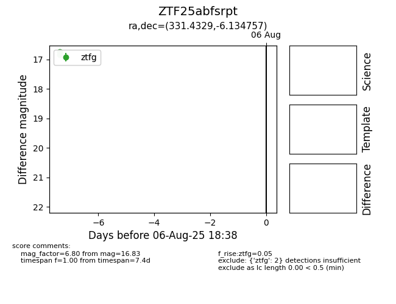

Target ZTF25abfsrpt at 2025-08-06 19:05, see:
FINK: fink-portal.org/ZTF25abfsrpt
Lasair: lasair-ztf.lsst.ac.uk/objects/ZTF25abfsrpt
ALeRCE: alerce.online/object/ZTF25abfsrpt
alt names
ZTF25abfsrpt (ztf,fink)
coordinates:
equatorial (ra, dec) = (331.4329,-6.13476)
galactic (l, b) = (53.3449,-45.41623)
photometry
last ztfg=16.83
2 ztfg detections
